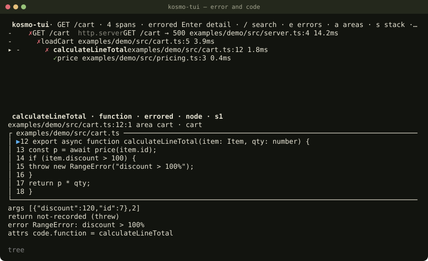

Термінальний переглядач знімків kosmo-trace/v1 і live-дебагер для Node та браузера. Відповідає на
одне питання: яка логіка і який шматок коду стоїть за кожним викликом.
npx @ivlad003/kosmo-tui ./x.kosmo-trace.json
producer | npx @ivlad003/kosmo-tui -
npx @ivlad003/kosmo-tui ./x.kosmo-trace.json --print --trace t_cart
Потрібен Node >= 22.13.0. Перегляд не ходить у мережу і нічого не пише в файл траси. Дебагер чіпляється лише до
loopback inspector і лише після підтвердження. -r вимикає кожну debug-дію.

module · feature.--print./, з домашньої директорії чи вище неї, якщо ви самі не задали
--root.
Є файл або потік kosmo-trace, і треба зрозуміти, який виклик упав і в якому файлі. Або процес уже
запущений з inspector, і треба зупинити той самий рядок, не збираючи нову трасу. Без траси лишається Targets
(A): чіплятись можна, дерева викликів не буде.
Маскування в переглядачі — другий шар. Секрет у полі з невинною назвою він не зловить. Producer має маскувати значення в момент запису.
Покрокові кейси, клавіші і --print — у інструкції.